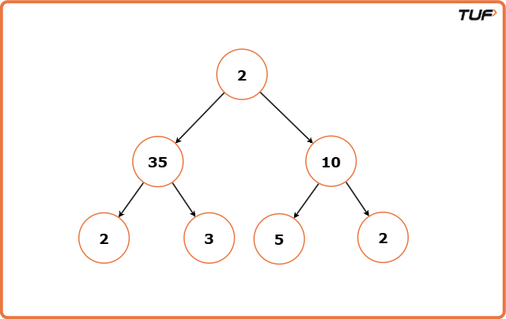
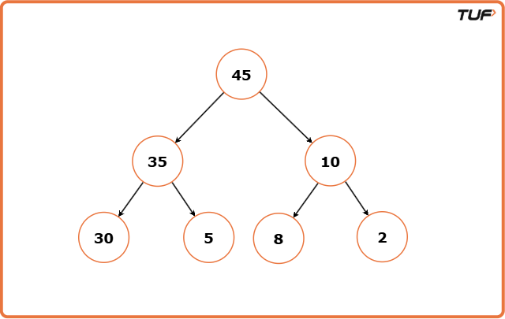
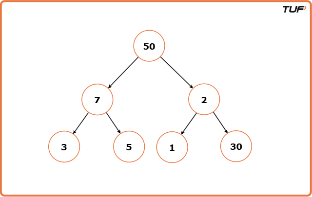
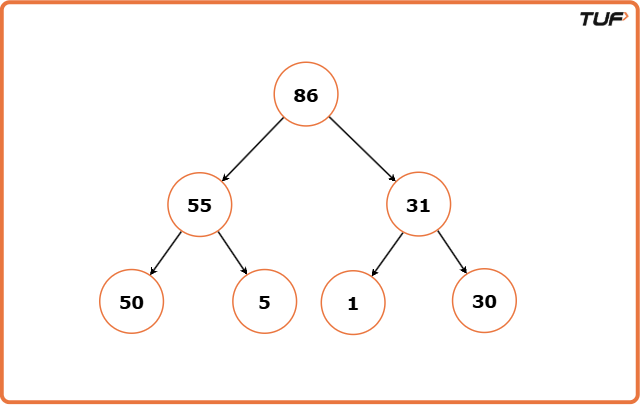

Check for Children Sum Property in a Binary Tree
Problem Statement: Given a Binary Tree, convert the value of its nodes to follow the Children Sum Property. The Children Sum Property in a binary tree states that for every node, the sum of its children's values (if they exist) should be equal to the node's value. If a child is missing, it is considered as having a value of 0.
Note:
- The node values can be increased by any positive integer any number of times, but decrementing any node value is not allowed.
- A value for a NULL node can be assumed as 0.
- We cannot change the structure of the given binary tree.
Examples
Example 1: Input: Binary Tree: 2 35 10 2 3 5 2
Output: Binary Tree: 45 35 10 30 5 8 2
Explanation: We cannot decrement the value of the node but only increment. There are many different ways to do this but we have to ensure that we are only increasing the values of the nodes in such a way that its value is equal to the sum of its left and right children. Example 2: Input: Binary Tree: 50 7 2 3 5 1 30
Output : Binary Tree: 50 55 5 86 1 31 30
Explanation: We modify the tree in such a way that the value of each node becomes the value of its left and right children. If a node is a left or right child and its parent is of a greater value, since we cannot decrease the value of the parent, we increase the value of the children nodes so that the Binary Tree follows the children sum property.
Approach
Algorithm
- Only node values can be increased; decreasing is not allowed. Tree structure stays fixed.
- Bottom-up adjustment fails when child sum is more than the parent, since we can't reduce parent.
- If children sum is less than the node, we increase children's values recursively to match.
- Use recursion to visit every node and check the Children Sum Property at each level.
- Compare this sum with the parent value and adjust accordingly.
- If children ≥ node, update node to match child sum.
- If children < node, update one child to match parent (since we can't decrease).
- After processing both children, update node value to final left + right sum.
Code
#include <iostream>
using namespace std;
// TreeNode structure
struct TreeNode {
int val;
TreeNode *left;
TreeNode *right;
TreeNode(int x) : val(x), left(nullptr), right(nullptr) {}
};
class Solution {
public:
// Function to change the values of the nodes
// based on the sum of its children's values.
void changeTree(TreeNode* root) {
// Base case: If the current node
// is NULL, return and do nothing.
if (root == NULL) {
return;
}
// Calculate the sum of the values of
// the left and right children, if they exist.
int child = 0;
if (root->left) {
child += root->left->val;
}
if (root->right) {
child += root->right->val;
}
// Compare the sum of children with
// the current node's value and update
if (child >= root->val) {
root->val = child;
} else {
// If the sum is smaller, update the
// child with the current node's value.
if (root->left) {
root->left->val = root->val;
} else if (root->right) {
root->right->val = root->val;
}
}
// Recursively call the function
// on the left and right children.
changeTree(root->left);
changeTree(root->right);
// Calculate the total sum of the
// values of the left and right
// children, if they exist.
int tot = 0;
if (root->left) {
tot += root->left->val;
}
if (root->right) {
tot += root->right->val;
}
// If either left or right child
// exists, update the current node's
// value with the total sum.
if (root->left or root->right) {
root->val = tot;
}
}
};
// Function to print the inorder
// traversal of the tree
void inorderTraversal(TreeNode* root) {
if (root == nullptr) {
return;
}
inorderTraversal(root->left);
cout << root->val << " ";
inorderTraversal(root->right);
}
int main() {
// Create the binary tree
TreeNode* root = new TreeNode(3);
root->left = new TreeNode(5);
root->right = new TreeNode(1);
root->left->left = new TreeNode(6);
root->left->right = new TreeNode(2);
root->right->left = new TreeNode(0);
root->right->right = new TreeNode(8);
root->left->right->left = new TreeNode(7);
root->left->right->right = new TreeNode(4);
Solution sol;
// Print the inorder traversal
// of tree before modification
cout << "Binary Tree before modification: ";
inorderTraversal(root);
cout << endl;
// Call the changeTree function
// to modify the binary tree
sol.changeTree(root);
// Print the inorder traversal
// after modification
cout << "Binary Tree after Children Sum Property: " ;
inorderTraversal(root);
cout << endl;
return 0;
}
Complexity Analysis
Time Complexity: O(N), where N is the number of nodes in the binary tree. This is because the algorithm traverses each node exactly once, performing constant-time operations at each node.
Space Complexity: O(N), where N is the number of nodes in the Binary Tree.